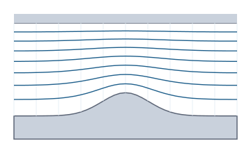

Design methods for turbomachinery
Compute cores without a user interface for the preliminary design of compressors and turbines: meridional throughflow by the streamline curvature method, basic relations of plane blade cascades, the secondary air system as a network of chambers and restrictions, and the cycle of a gas turbine built from components. Gas properties as an ideal gas with fixed and .

Durchstroemung.rechne: streamlines through an annular duct with a bump on the hub (bottom), casing on top, free-vortex swirl.Principles of the module
Meridional throughflow envisionz.turbo.durchstroemung
Radial equilibrium on quasi-orthogonals with swirl, streamline curvature and slope; the mass flow fixes the meridional velocity at the hub, and the streamlines divide it evenly. Background, formulas and pseudocode →
Durchstroemung
Annular duct from stations with hub and casing radius, swirl as a function, mass flow, total state. Result: radii, , and slope per station and streamline, number of passes and the remaining change.
Example – free vortex in a cylindrical annulus
Durchstroemung.Kanal k = new Durchstroemung.Kanal(x, nabe, gehaeuse,
(i, r) -> 15.0, // r c_u constant: free vortex
30, 300, 1e5, 1004.5, 1.4); // kg/s, K, Pa, J/(kg K), gamma
Durchstroemung.Ergebnis e = Durchstroemung.rechne(k, 9, 101, true);
double cmMid = e.cm()[x.length / 2][4]; // meridional velocity, middle streamlinePlane blade cascades envisionz.turbo.gitter
Lieblein diffusion factor and de Haller number, deviation after Carter, Zweifel coefficient and the pitch for a required coefficient, profile loss after Soderberg. Background, formulas and pseudocode →
Gitter
Static methods, angles in radians against the axis: lieblein → {D, W₂/W₁}, carter → δ, zweifel, teilungNachZweifel, soderberg. Invalid input (solidity ≤ 0, cascade without turning) is rejected.
Secondary air system envisionz.turbo.luftsystem
Chambers with fixed or free pressure, connected by orifices (choked as well) and labyrinths after Martin; Newton on the chamber pressures, mixing temperature per chamber. Background, formulas and pseudocode →
Luftsystem
Build the network with fest(p, T), frei(pStart), blende(von, nach, CdA), labyrinth(von, nach, CdA, spitzen); loese(toleranz) returns pressures, temperatures, mass flows and the relative residual.
Example – two restrictions in series
Luftsystem s = new Luftsystem(1.4, 287.05);
int a = s.fest(6e5, 700), b = s.frei(4e5), c = s.fest(1.2e5, 300);
s.blende(a, b, 2e-4);
s.labyrinth(b, c, 3e-4, 5);
Luftsystem.Ergebnis e = s.loese(1e-12); // e.p()[b]: chamber pressure, e.m(): mass flowsGas turbine cycle envisionz.turbo.kreisprozess
Compressor, combustor and turbine as building blocks; the turbine covers compressor and useful power, and its expansion ratio follows in closed form from the shaft balance. Background, formulas and pseudocode →
Kreisprozess
Building blocks Verdichter(π, η, γ, c_p), Brennkammer(T₄, Δp/p, H_u, η_B, c_p), Turbine(η, γ, c_p), stream (ṁ, T_t, p_t); einwellig connects them, jouleIdeal gives the efficiency of the loss-free cycle.
How it is checked
| Probe | Checks | Anchors |
|---|---|---|
Durchstroemungsprobe | 9 | free vortex ( constant), solid-body vortex (closed form), compressible, curved duct against of its own streamlines, equal-area streamlines without swirl, conical annulus against the source flow, full pipe (hub 0), error cases |
Gitterprobe | 4 | diffusion factor by hand (50° to 20°, σ = 1.5: D = 0.4933, de Haller 0.684), Carter on a circular-arc profile, Zweifel there and back (s/b = 1.0443), Soderberg, error cases |
Luftsystemprobe | 6 | orifice continuous at the choking limit and correct in the incompressible limit, two orifices in series by hand, choked series, Martin against a chain of single orifices (deviation falls like 1/n), mixing temperature, labyrinth and reverse-flow orifice in the network |
Kreisprozessprobe | 4 | against the NFML gas turbine example (T₃, fuel, T₅, p₅, expansion ratio, power to 1e-12), Joule cycle, largest specific work at , error case |
Limits
- Throughflow adiabatic and loss-free: total enthalpy and entropy fixed per streamline, blade forces only through the prescribed swirl.
- Loss correlations based on map data (Ainley-Mathieson, Kacker-Okapuu) are missing; their curves are not available as checkable data.
- Air system without pumping of rotating walls and without heat transfer; Martin labyrinth only unchoked.
- Cycle single-shaft with fixed properties per component; no cooling air extraction.